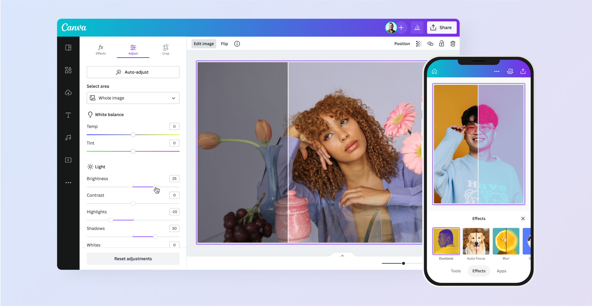

Rafaela Sousa: Resumo
Hard Skills
- Nível de inglês: Básico
-  Facilidade em edições
- Criação de textos
Soft Skills
 Boa comunicação
Boa comunicação- Proatividade
- Otimismo
Interesses Profissionais
- Curto Prazo: Desenvolver minhas habilidades de comunicação e liderança participando de projetos extracurriculares e grupos estudantis. Projeto para 1 ou 2 anos
- Médio Prazo: Conquistar uma oportunidade de trabalho que me permita aplicar meus conhecimentos e habilidades de forma significativa. Projeto para 8 a 10 anos
- Longo Prazo: Avançar na minha carreira e assumir posições de liderança onde possa inspirar outras jovens a seguir seus sonhos. Projeto para 15 anos